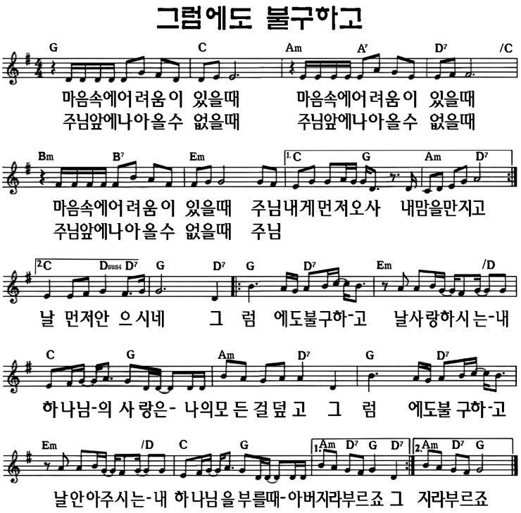

나 하나 지키기도 벅찬데
2026년 9월 27일 주일설교 "나 하나 지키기도 벅찬데"(창세기 4장·가인과 아벨)와 같은 메시지를, 또 다른 형제 이야기로 함께 나누는 가정예배입니다.
창세기 45:4-5, 15 · 형들을 끌어안은 요셉
1. 묵상기도
다같이잠시 눈을 감고 마음을 가다듬습니다. 내가 누군가에게 서운했던 일, 혹은 내가 누군가를 아프게 했던 일을 떠올리며, 그 모든 마음을 아시는 하나님 앞에 나아갑니다.
2. 신앙고백
다같이나는 전능하신 아버지 하나님, 천지의 창조주를 믿습니다. 나는 그의 유일하신 아들, 우리 주 예수 그리스도를 믿습니다. 그는 성령으로 잉태되어 동정녀 마리아에게서 나시고, 본디오 빌라도에게 고난을 받아 십자가에 못 박혀 죽으시고, 장사된 지 사흘 만에 죽은 자 가운데서 다시 살아나셨으며, 하늘에 오르시어 전능하신 아버지 하나님 우편에 앉아 계시다가, 거기로부터 살아 있는 자와 죽은 자를 심판하러 오십니다. 나는 성령을 믿으며, 거룩한 공교회와 성도의 교제와 죄를 용서받는 것과 몸의 부활과 영생을 믿습니다. 아멘.
2004년 한국기독교교회협의회·한국기독교총연합회·대한성서공회 공동 새번역
3. 찬송
다같이그럼에도 불구하고

유튜브에서 듣기4. 대표기도
담당자미리 정한 가족이 아래 기도문을 그대로 읽거나, 참고하여 자신의 말로 기도합니다.
사랑하는 하나님 아버지, 온 가족이 함께 모여 예배드릴 수 있어서 감사합니다. 우리도 가족이나 친구에게 서운하고 미운 마음이 들 때가 있습니다. 요셉이 자기를 힘들게 했던 형들을 안아 준 것처럼, 우리도 미워하는 마음 대신 안아 주는 마음을 갖게 해 주세요. 나만 생각하지 않고, 가족이 힘들 때 함께 아파하는 사람이 되게 해 주세요. 예수님 이름으로 기도합니다. 아멘.
5. 성경봉독
다같이창세기 45:4-5, 15 (개역개정)
4요셉이 형들에게 이르되 내게로 가까이 오소서 그들이 가까이 가니 이르되 나는 당신들의 아우 요셉이니 당신들이 애굽에 판 자라
5당신들이 나를 이 곳에 팔았다고 해서 근심하지 마소서 한탄하지 마소서 하나님이 생명을 구원하시려고 나를 당신들보다 먼저 보내셨나이다
15요셉이 또 형들과 입맞추며 안고 우니 형들이 그제야 요셉과 말하니라
6. 말씀나눔
인도자가장 사랑하는 가족에게 오히려 큰 상처를 받은 적이 있나요? 오늘은 그런 상처를 준 형들을 끝까지 안아 준 한 사람의 이야기입니다.
요셉은 아버지 야곱이 가장 사랑하는 아들이었습니다. 형이 열 명이나 있었는데, 형들은 아버지가 요셉만 예뻐하는 것을 못마땅해했습니다. 거기다 요셉이 언젠가 형들이 자기에게 절하게 될 거라는 꿈 이야기까지 하자, 형들의 미움은 점점 커졌습니다.
결국 형들은 요셉을 죽이려다가 마음을 바꿔, 지나가던 상인들에게 노예로 팔아넘겼습니다. 그리고 아버지에게는 요셉이 짐승에게 물려 죽었다고 거짓말을 했습니다. 요셉은 낯선 나라 애굽으로 끌려가 노예로 살았고, 나중에는 억울하게 감옥에 갇히기까지 했습니다.
그런데 하나님은 그 오랜 시간 동안 요셉과 함께하셨습니다. 감옥에서 왕의 꿈을 풀어 준 일을 계기로, 요셉은 애굽의 총리가 되었습니다. 몇 년 뒤, 그 땅에 큰 흉년이 들었습니다.
흉년을 피해 곡식을 사러 애굽까지 내려온 사람들 중에, 요셉의 형들이 있었습니다. 형들은 눈앞의 총리가 자기들이 팔았던 그 동생인 줄 전혀 몰랐습니다. 하지만 요셉은 형들을 한눈에 알아보았습니다.
요셉은 형들에게 복수할 수도 있었습니다. 그런데 사람들을 다 물러가게 하고, 형들에게만 이렇게 말했습니다. "내게로 가까이 오세요. 나는 여러분이 애굽에 판 동생 요셉입니다." 형들은 너무 놀라서 아무 말도 하지 못했습니다.
요셉은 형들을 나무라지 않았습니다. 오히려 이렇게 말했습니다. "나를 이곳에 판 것을 슬퍼하지 마세요. 하나님이 사람들의 생명을 구하시려고 나를 먼저 보내신 것입니다." 그리고 형들을 안고 울었습니다. 그제야 형들도 요셉과 이야기할 수 있었습니다.
가인은 동생을 미워하다가 죽였습니다. 요셉은 자기를 힘들게 한 형들을 안아 주었습니다. 요셉은 자기가 억울했던 일보다, 그 모든 시간 동안 함께하신 하나님을 보았습니다. 그래서 형들을 미워하지 않고 안아 줄 수 있었습니다.
7. 함께 나누는 이야기
다같이- 어린이와 함께 요셉은 자기를 판 형들을 만났을 때 화를 내지 않고 끌어안았어요. 나는 나를 속상하게 한 형제나 친구를 다시 만나면 어떻게 하고 싶나요?
- 함께 생각해보기 가인은 동생을 미워하다 죽였고, 요셉은 형들을 미워할 수 있었지만 끌어안았습니다. 나는 지금 누구를 가인처럼 미워하고 있나요, 요셉처럼 안아 주고 싶나요?
- 우리 가정을 위해 우리 가족 안에 아직 풀리지 않은 서운함이나 오해가 있다면 무엇인가요? 이번 주, 그 사람에게 먼저 다가가 볼 수 있을까요?
8. 합심기도
다같이가족이 돌아가며 짧게 한 가지씩 기도 제목을 나누고, 서로를 위해 소리 내어 기도합니다. 나이가 어린 자녀도 짧은 한마디로 참여할 수 있습니다.
9. 주기도문
다같이하늘에 계신 우리 아버지, 아버지의 이름을 거룩하게 하시며 아버지의 나라가 오게 하시며, 아버지의 뜻이 하늘에서와 같이 땅에서도 이루어지게 하소서. 오늘 우리에게 일용할 양식을 주시고, 우리가 우리에게 잘못한 사람을 용서하여 준 것같이 우리 죄를 용서하여 주시고, 우리를 시험에 빠지지 않게 하시고 악에서 구하소서. 나라와 권능과 영광이 영원히 아버지의 것입니다. 아멘.
2004년 한국기독교교회협의회·한국기독교총연합회·대한성서공회 공동 새번역